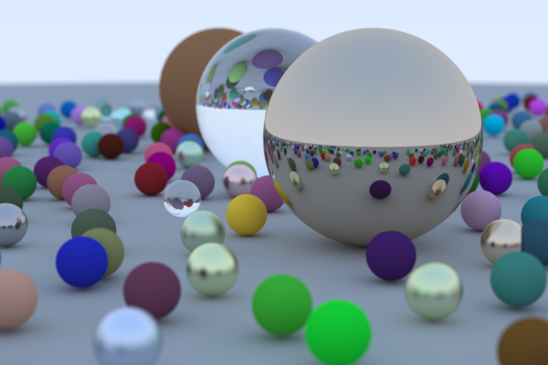
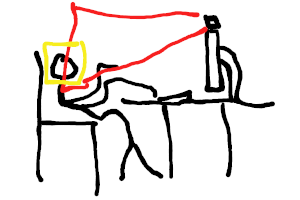

Robert Obkircher
- Github: RobertObkircher
- Born: 1999
Try on this website!
-
Minecraft Clone
WebGPU
Rust
An almost infinite 3d world.
Some other projects:
-
Ray Tracing
Rust

This image is the result of following the book Ray Tracing in One Weekend. -
Posture Reminder
C++

Uses your webcam and face detection to remind you to sit up straight. -
SchokoVM
Java
C++
A Java Virtual Machine (JVM) which we wrote in a group project for a lecture on abstract machines.
-
CTF Writeups
Writeups for Capture The Flag cybersecurity competitions